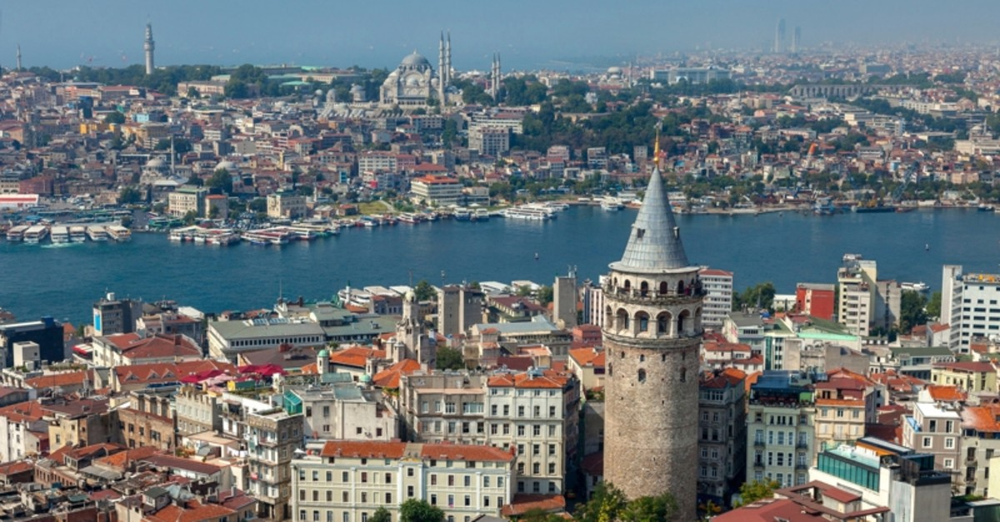
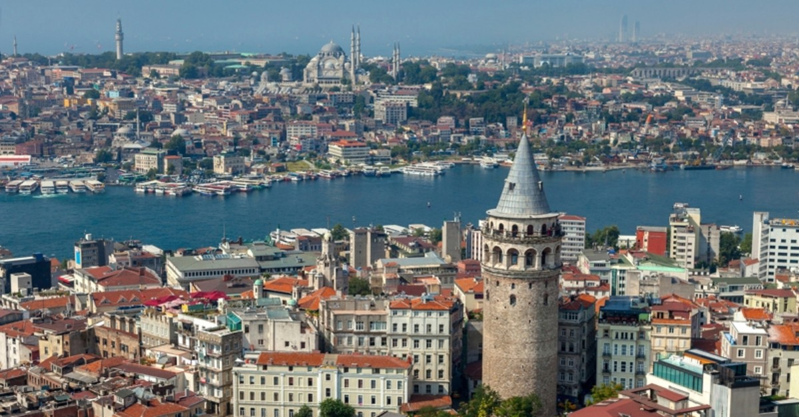

Προσωπικά θεωρώ ότι τα καλύτερα ταξίδια γίνονται τον Χειμώνα και οι καλύτεροι
προορισμοί είναι οι ορεινοί. Επομένως θα παραθέσω μερικούς προορισμούς που θα
ήθελα κάποια στιγμή να επισκευθώ, αλλά και μέρη τα ποία έχω πάει και θα ήθελα να ξαναπάω.

 
